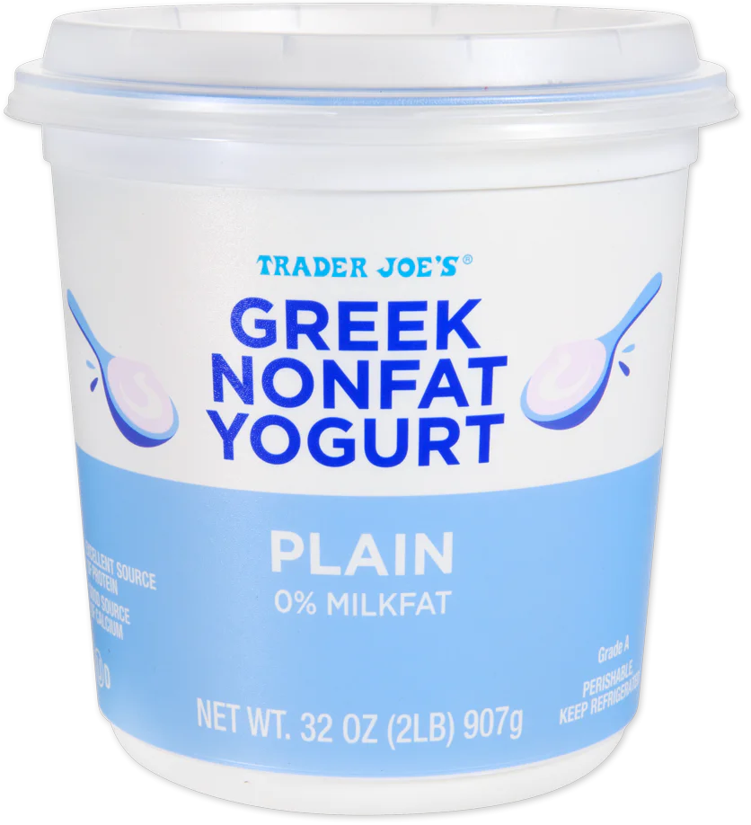
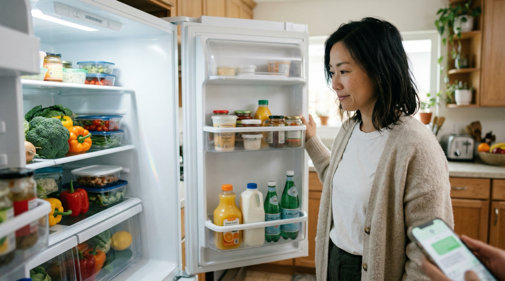
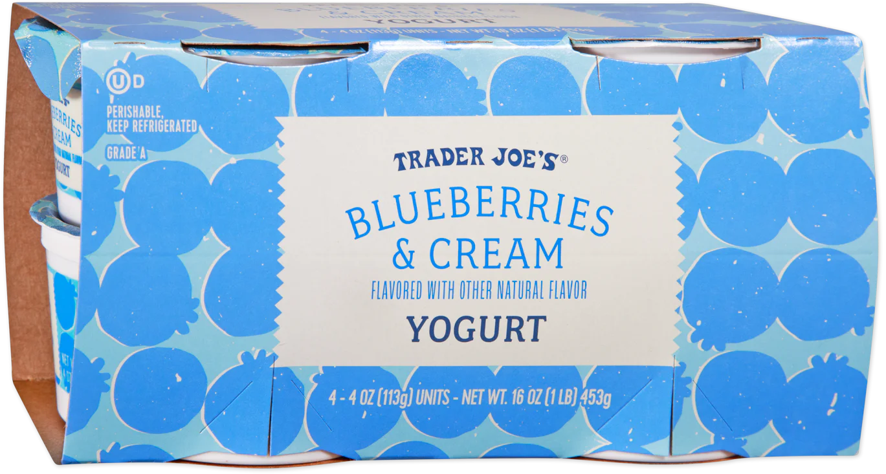
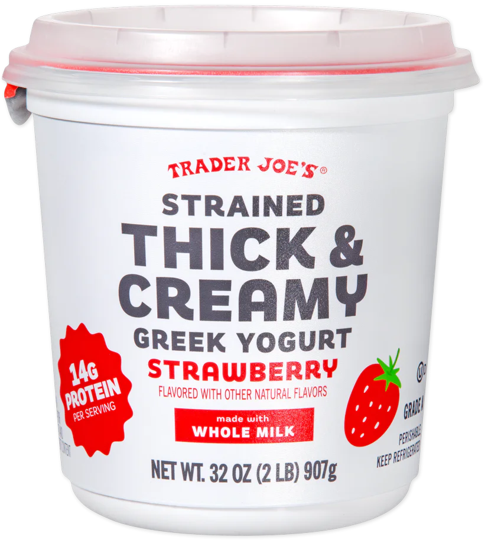
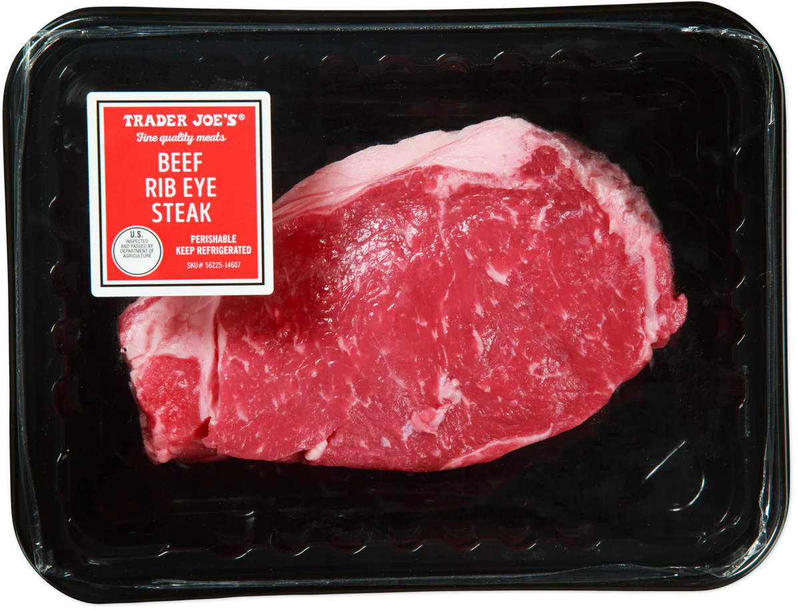
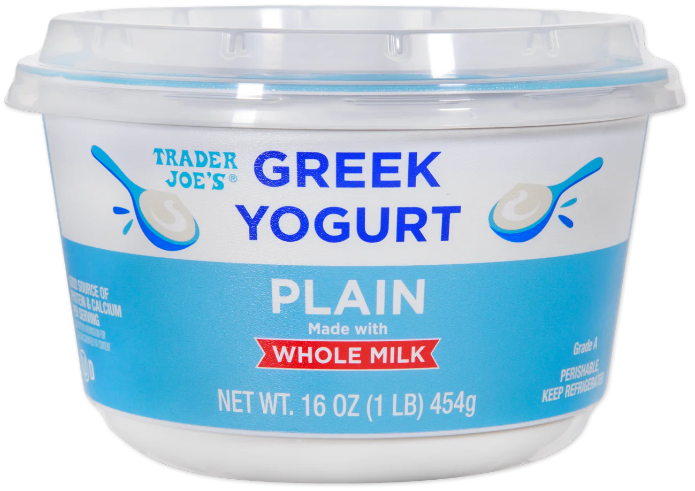
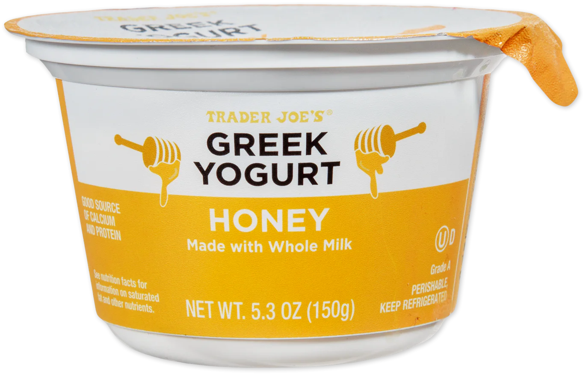

ひとつの「夕飯どうする？」に
5つのアプリを
行き来する毎日
カレンダー、Amazon、配達追跡、メモ、リマインダー。
情報はあるのに、つながらない。

The Yogurt Incident
全部、無糖ヨーグルト。
冷蔵庫を開けたYuki。ヨーグルトは3つもある。でも全部プレーンの無糖。「私が食べたいのはこれじゃない。」AIにとって「ヨーグルト」は「ヨーグルト」。Yukiにとっては、あのハニーヨーグルトだけが「自分のヨーグルト」だった。
✗ 冷蔵庫にあったもの


全部無糖。
✓ Yukiが欲しかったもの


「また、ない。」
Yukiの行動
「このヨーグルトだけは
絶対に間違えないで。」
Yukiはスマホを開いて、Home Brainに伝えた。
「Honey Greek Yogurt、Trader Joe’s。これだけはExactで。代わりは要らない。」
この瞬間から、Home BrainはYukiの「ヨーグルト」を理解し始めた。
任せていい範囲を、少しずつ広げていく。Exactは「これだけは私が決める」。Flexibleは「同じジャンルならお任せ」。Exploringは「シェフの気まぐれ」。SurpriseはOmakaseそのもの。
 9:41 AM · 土曜日
9:41 AM · 土曜日



AIが家族を学ぶ過程
4つのモードは
こうして生まれた
Substitution Modes
同じ「ヨーグルト」でも、人によって扱いが違う





6:30 PM
Honey Yogurt
Multi-Device Orchestration
4人のデバイスが同時に変形する
ADAPTATIONドアベルがSoutaの到着を検知した瞬間、Social Exposureが変化し、TV・Phone・Nestが同時に変形する。料理は同じ。空間が変わっただけ。
TV＝全体マップ。親のスマホ＝ダッシュボード。Ren(10)のタブレット＝ミッション画面。Hana(7)のタブレット＝おてつだいチェックリスト。
 7:00 AM
7:00 AM
Blueberry(Ren)
乳製品フリー(Hana)
Salmon · Fries
Yuki: 休日
Ren: Soccer 3PM
Hana: 友達と遊ぶ
Over Time
信頼は関係である